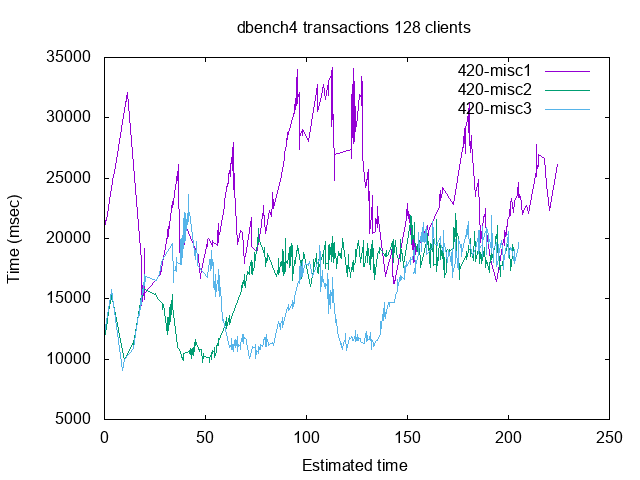
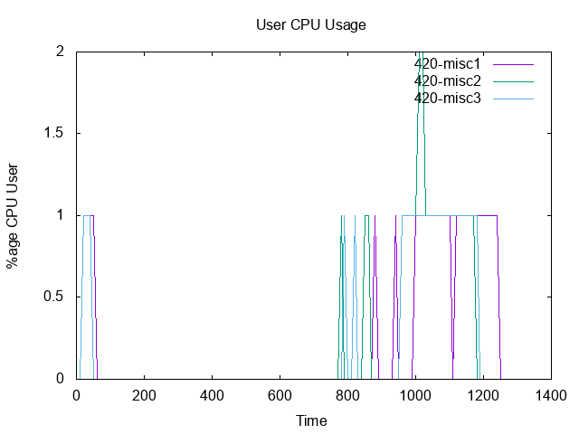
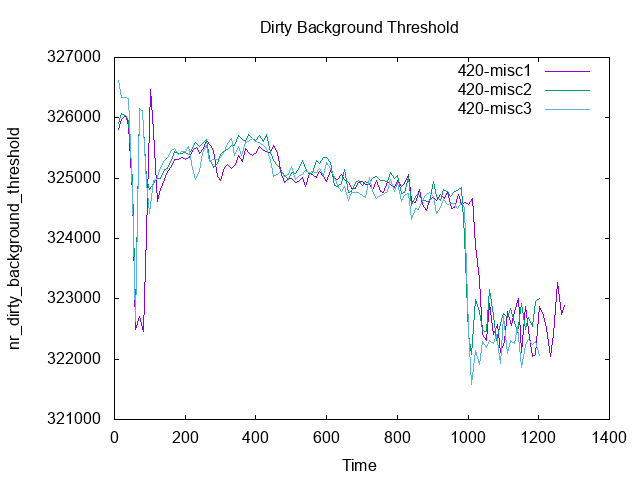
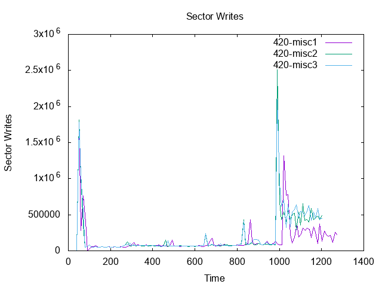
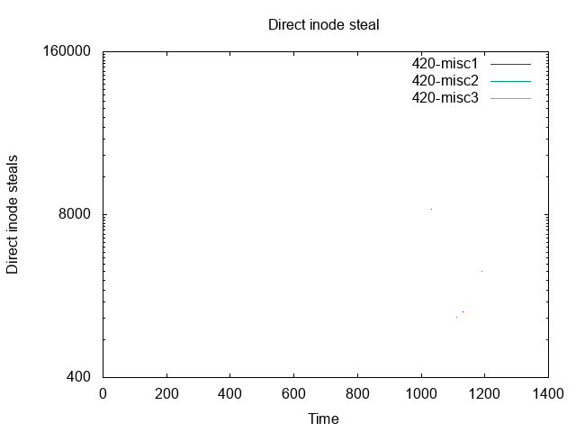
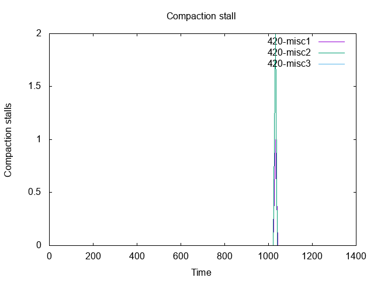
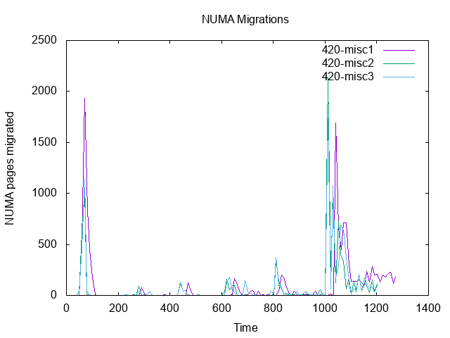

| 420 | 420 | 420 | |||||
|---|---|---|---|---|---|---|---|
| misc1 | misc2 | misc3 | |||||
| Min | 1 | 1694.00 | ( 0.00%) | 1761.00 | ( -3.96%) | 1711.00 | ( -1.00%) |
| Min | 2 | 2408.00 | ( 0.00%) | 2564.00 | ( -6.48%) | 2514.00 | ( -4.40%) |
| Min | 4 | 2456.00 | ( 0.00%) | 2675.00 | ( -8.92%) | 2584.00 | ( -5.21%) |
| Min | 8 | 2831.00 | ( 0.00%) | 2802.00 | ( 1.02%) | 2729.00 | ( 3.60%) |
| Min | 16 | 3397.00 | ( 0.00%) | 2988.00 | ( 12.04%) | 3206.00 | ( 5.62%) |
| Min | 128 | 14468.00 | ( 0.00%) | 9694.00 | ( 33.00%) | 9079.00 | ( 37.25%) |
| Amean | 1 | 1845.85 | ( 0.00%) | 1875.85 | ( -1.63%) | 1864.56 | ( -1.01%) |
| Amean | 2 | 2689.13 | ( 0.00%) | 2808.98 | ( -4.46%) | 2719.47 | ( -1.13%) |
| Amean | 4 | 3142.56 | ( 0.00%) | 3189.48 | ( -1.49%) | 3176.00 | ( -1.06%) |
| Amean | 8 | 3496.96 | ( 0.00%) | 3520.45 | ( -0.67%) | 3526.94 | ( -0.86%) |
| Amean | 16 | 4206.64 | ( 0.00%) | 4026.04 | ( 4.29%) | 4409.87 | ( -4.83%) |
| Amean | 128 | 25723.60 | ( 0.00%) | 16524.55 | ( 35.76%) | 15731.85 | ( 38.84%) |
| Stddev | 1 | 101.26 | ( 0.00%) | 85.50 | ( 15.57%) | 94.16 | ( 7.01%) |
| Stddev | 2 | 141.47 | ( 0.00%) | 112.68 | ( 20.35%) | 114.73 | ( 18.90%) |
| Stddev | 4 | 251.08 | ( 0.00%) | 257.47 | ( -2.55%) | 239.30 | ( 4.69%) |
| Stddev | 8 | 322.13 | ( 0.00%) | 341.18 | ( -5.91%) | 391.87 | ( -21.65%) |
| Stddev | 16 | 830.96 | ( 0.00%) | 452.29 | ( 45.57%) | 1189.87 | ( -43.19%) |
| Stddev | 128 | 4651.39 | ( 0.00%) | 3124.35 | ( 32.83%) | 3293.61 | ( 29.19%) |
| Max | 1 | 2334.00 | ( 0.00%) | 2299.00 | ( 1.50%) | 2423.00 | ( -3.81%) |
| Max | 2 | 3400.00 | ( 0.00%) | 3257.00 | ( 4.21%) | 3115.00 | ( 8.38%) |
| Max | 4 | 3934.00 | ( 0.00%) | 4091.00 | ( -3.99%) | 3935.00 | ( -0.03%) |
| Max | 8 | 4829.00 | ( 0.00%) | 4866.00 | ( -0.77%) | 5676.00 | ( -17.54%) |
| Max | 16 | 7996.00 | ( 0.00%) | 5862.00 | ( 26.69%) | 9036.00 | ( -13.01%) |
| Max | 128 | 34137.00 | ( 0.00%) | 22035.00 | ( 35.45%) | 23622.00 | ( 30.80%) |
| SubAmean | 1 | 1844.71 | ( 0.00%) | 1875.26 | ( -1.66%) | 1863.47 | ( -1.02%) |
| SubAmean | 2 | 2691.36 | ( 0.00%) | 2809.30 | ( -4.38%) | 2718.75 | ( -1.02%) |
| SubAmean | 4 | 3138.92 | ( 0.00%) | 3187.65 | ( -1.55%) | 3174.34 | ( -1.13%) |
| SubAmean | 8 | 3496.24 | ( 0.00%) | 3515.46 | ( -0.55%) | 3530.10 | ( -0.97%) |
| SubAmean | 16 | 4203.08 | ( 0.00%) | 4024.89 | ( 4.24%) | 4420.32 | ( -5.17%) |
| SubAmean | 128 | 25769.90 | ( 0.00%) | 16520.14 | ( 35.89%) | 15725.24 | ( 38.98%) |
| SubAmeanCI | 1 | 21.66 | ( 0.00%) | 19.37 | ( 10.59%) | 21.16 | ( 2.32%) |
| SubAmeanCI | 2 | 26.02 | ( 0.00%) | 21.74 | ( 16.45%) | 21.66 | ( 16.74%) |
| SubAmeanCI | 4 | 36.02 | ( 0.00%) | 36.88 | ( -2.38%) | 34.40 | ( 4.49%) |
| SubAmeanCI | 8 | 34.44 | ( 0.00%) | 36.42 | ( -5.75%) | 43.08 | ( -25.09%) |
| SubAmeanCI | 16 | 68.13 | ( 0.00%) | 37.02 | ( 45.67%) | 100.77 | ( -47.90%) |
| SubAmeanCI | 128 | 302.75 | ( 0.00%) | 171.69 | ( 43.29%) | 175.81 | ( 41.93%) |
| 420 | 420 | 420 | |||||
|---|---|---|---|---|---|---|---|
| misc1 | misc2 | misc3 | |||||
| Min | latency-1 | 29.76 | ( 0.00%) | 29.86 | ( -0.36%) | 29.88 | ( -0.41%) |
| Min | latency-2 | 46.35 | ( 0.00%) | 47.83 | ( -3.18%) | 47.14 | ( -1.70%) |
| Min | latency-4 | 65.98 | ( 0.00%) | 62.86 | ( 4.73%) | 60.30 | ( 8.62%) |
| Min | latency-8 | 69.15 | ( 0.00%) | 68.71 | ( 0.63%) | 69.72 | ( -0.82%) |
| Min | latency-16 | 77.17 | ( 0.00%) | 76.23 | ( 1.22%) | 68.12 | ( 11.73%) |
| Min | latency-128 | 226.70 | ( 0.00%) | 159.16 | ( 29.79%) | 171.39 | ( 24.40%) |
| Amean | latency-1 | 42.85 | ( 0.00%) | 39.82 | ( 7.07%) | 40.94 | ( 4.47%) |
| Amean | latency-2 | 67.03 | ( 0.00%) | 64.89 | ( 3.20%) | 66.67 | ( 0.54%) |
| Amean | latency-4 | 89.35 | ( 0.00%) | 87.27 | ( 2.32%) | 87.30 | ( 2.29%) |
| Amean | latency-8 | 107.46 | ( 0.00%) | 105.95 | ( 1.41%) | 109.96 | ( -2.33%) |
| Amean | latency-16 | 139.48 | ( 0.00%) | 120.78 | ( 13.41%) | 157.80 | ( -13.14%) |
| Amean | latency-128 | 639.75 | ( 0.00%) | 565.44 | ( 11.62%) | 567.52 | ( 11.29%) |
| Stddev | latency-1 | 27.95 | ( 0.00%) | 20.94 | ( 25.08%) | 29.63 | ( -6.02%) |
| Stddev | latency-2 | 36.11 | ( 0.00%) | 31.43 | ( 12.95%) | 33.53 | ( 7.13%) |
| Stddev | latency-4 | 33.22 | ( 0.00%) | 31.06 | ( 6.52%) | 32.28 | ( 2.84%) |
| Stddev | latency-8 | 114.93 | ( 0.00%) | 115.62 | ( -0.60%) | 123.16 | ( -7.16%) |
| Stddev | latency-16 | 111.32 | ( 0.00%) | 86.91 | ( 21.93%) | 120.53 | ( -8.27%) |
| Stddev | latency-128 | 298.98 | ( 0.00%) | 225.98 | ( 24.42%) | 243.91 | ( 18.42%) |
| CoeffVar | latency-1 | 65.22 | ( 0.00%) | 52.58 | ( 19.38%) | 72.37 | ( -10.97%) |
| CoeffVar | latency-2 | 53.87 | ( 0.00%) | 48.44 | ( 10.07%) | 50.29 | ( 6.63%) |
| CoeffVar | latency-4 | 37.18 | ( 0.00%) | 35.58 | ( 4.29%) | 36.97 | ( 0.56%) |
| CoeffVar | latency-8 | 106.95 | ( 0.00%) | 109.13 | ( -2.04%) | 112.00 | ( -4.72%) |
| CoeffVar | latency-16 | 79.81 | ( 0.00%) | 71.96 | ( 9.84%) | 76.38 | ( 4.30%) |
| CoeffVar | latency-128 | 46.73 | ( 0.00%) | 39.96 | ( 14.48%) | 42.98 | ( 8.04%) |
| Max | latency-1 | 201.32 | ( 0.00%) | 207.28 | ( -2.96%) | 331.49 | ( -64.66%) |
| Max | latency-2 | 274.54 | ( 0.00%) | 274.63 | ( -0.03%) | 274.85 | ( -0.11%) |
| Max | latency-4 | 290.83 | ( 0.00%) | 343.52 | ( -18.12%) | 336.15 | ( -15.58%) |
| Max | latency-8 | 1141.13 | ( 0.00%) | 1193.69 | ( -4.61%) | 1243.25 | ( -8.95%) |
| Max | latency-16 | 1007.68 | ( 0.00%) | 1004.01 | ( 0.36%) | 932.50 | ( 7.46%) |
| Max | latency-128 | 1637.09 | ( 0.00%) | 1319.71 | ( 19.39%) | 1357.83 | ( 17.06%) |
| BAmean-50 | latency-1 | 33.37 | ( 0.00%) | 33.69 | ( -0.96%) | 33.18 | ( 0.57%) |
| BAmean-50 | latency-2 | 53.71 | ( 0.00%) | 53.91 | ( -0.36%) | 53.08 | ( 1.17%) |
| BAmean-50 | latency-4 | 75.62 | ( 0.00%) | 75.51 | ( 0.14%) | 74.94 | ( 0.89%) |
| BAmean-50 | latency-8 | 79.99 | ( 0.00%) | 79.57 | ( 0.52%) | 79.83 | ( 0.20%) |
| BAmean-50 | latency-16 | 90.82 | ( 0.00%) | 89.68 | ( 1.25%) | 91.21 | ( -0.43%) |
| BAmean-50 | latency-128 | 419.15 | ( 0.00%) | 402.91 | ( 3.87%) | 385.92 | ( 7.93%) |
| BAmean-95 | latency-1 | 37.43 | ( 0.00%) | 36.24 | ( 3.19%) | 35.70 | ( 4.64%) |
| BAmean-95 | latency-2 | 60.01 | ( 0.00%) | 59.03 | ( 1.64%) | 60.69 | ( -1.14%) |
| BAmean-95 | latency-4 | 82.49 | ( 0.00%) | 81.37 | ( 1.36%) | 81.37 | ( 1.36%) |
| BAmean-95 | latency-8 | 89.51 | ( 0.00%) | 88.44 | ( 1.20%) | 91.09 | ( -1.76%) |
| BAmean-95 | latency-16 | 122.48 | ( 0.00%) | 106.49 | ( 13.06%) | 139.96 | ( -14.27%) |
| BAmean-95 | latency-128 | 596.88 | ( 0.00%) | 535.93 | ( 10.21%) | 537.02 | ( 10.03%) |
| BAmean-99 | latency-1 | 41.96 | ( 0.00%) | 38.88 | ( 7.34%) | 39.31 | ( 6.33%) |
| BAmean-99 | latency-2 | 65.87 | ( 0.00%) | 63.71 | ( 3.29%) | 65.50 | ( 0.56%) |
| BAmean-99 | latency-4 | 88.23 | ( 0.00%) | 85.84 | ( 2.71%) | 85.91 | ( 2.63%) |
| BAmean-99 | latency-8 | 101.78 | ( 0.00%) | 99.90 | ( 1.85%) | 103.67 | ( -1.85%) |
| BAmean-99 | latency-16 | 134.81 | ( 0.00%) | 115.92 | ( 14.01%) | 153.55 | ( -13.90%) |
| BAmean-99 | latency-128 | 631.69 | ( 0.00%) | 558.37 | ( 11.61%) | 560.51 | ( 11.27%) |
| 420 | 420 | 420 | |||||
|---|---|---|---|---|---|---|---|
| misc1 | misc2 | misc3 | |||||
| Min | 1 | 5.41 | ( 0.00%) | 5.41 | ( 0.00%) | 5.41 | ( 0.00%) |
| Min | 2 | 10.14 | ( 0.00%) | 1.43 | ( -85.90%) | 1.39 | ( -86.29%) |
| Min | 4 | 3.00 | ( 0.00%) | 2.31 | ( -23.00%) | 3.18 | ( 6.00%) |
| Min | 8 | 5.56 | ( 0.00%) | 5.62 | ( 1.08%) | 4.45 | ( -19.96%) |
| Min | 16 | 8.00 | ( 0.00%) | 8.29 | ( 3.62%) | 8.06 | ( 0.75%) |
| Min | 128 | 15.24 | ( 0.00%) | 19.87 | ( 30.38%) | 14.90 | ( -2.23%) |
| Hmean | 1 | 10.10 | ( 0.00%) | 10.05 | ( -0.48%) | 10.06 | ( -0.41%) |
| Hmean | 2 | 13.94 | ( 0.00%) | 12.75 | ( -8.58%) | 13.17 | ( -5.52%) |
| Hmean | 4 | 23.08 | ( 0.00%) | 22.63 | ( -1.99%) | 23.37 | ( 1.23%) |
| Hmean | 8 | 42.26 | ( 0.00%) | 42.08 | ( -0.44%) | 40.98 | ( -3.03%) |
| Hmean | 16 | 68.12 | ( 0.00%) | 70.87 | ( 4.03%) | 67.41 | ( -1.05%) |
| Hmean | 128 | 81.07 | ( 0.00%) | 139.14 | ( 71.63%) | 133.66 | ( 64.87%) |
| Stddev | 1 | 0.41 | ( 0.00%) | 0.38 | ( 7.16%) | 0.41 | ( 0.34%) |
| Stddev | 2 | 0.44 | ( 0.00%) | 1.06 | (-143.89%) | 1.10 | (-152.64%) |
| Stddev | 4 | 1.87 | ( 0.00%) | 1.79 | ( 4.46%) | 1.75 | ( 6.28%) |
| Stddev | 8 | 3.28 | ( 0.00%) | 3.17 | ( 3.33%) | 3.30 | ( -0.60%) |
| Stddev | 16 | 5.89 | ( 0.00%) | 5.61 | ( 4.76%) | 6.95 | ( -17.94%) |
| Stddev | 128 | 13.63 | ( 0.00%) | 22.78 | ( -67.09%) | 22.18 | ( -62.71%) |
| CoeffVar | 1 | 4.03 | ( 0.00%) | 3.76 | ( 6.69%) | 4.04 | ( -0.07%) |
| CoeffVar | 2 | 3.12 | ( 0.00%) | 7.99 | (-155.79%) | 7.98 | (-155.56%) |
| CoeffVar | 4 | 7.83 | ( 0.00%) | 7.54 | ( 3.61%) | 7.27 | ( 7.13%) |
| CoeffVar | 8 | 7.50 | ( 0.00%) | 7.29 | ( 2.84%) | 7.71 | ( -2.74%) |
| CoeffVar | 16 | 8.31 | ( 0.00%) | 7.61 | ( 8.40%) | 9.88 | ( -18.95%) |
| CoeffVar | 128 | 15.46 | ( 0.00%) | 14.84 | ( 4.01%) | 14.84 | ( 4.00%) |
| Max | 1 | 10.36 | ( 0.00%) | 10.29 | ( -0.68%) | 10.27 | ( -0.87%) |
| Max | 2 | 14.20 | ( 0.00%) | 13.62 | ( -4.08%) | 14.10 | ( -0.70%) |
| Max | 4 | 24.91 | ( 0.00%) | 24.57 | ( -1.36%) | 25.97 | ( 4.26%) |
| Max | 8 | 47.43 | ( 0.00%) | 46.30 | ( -2.38%) | 45.99 | ( -3.04%) |
| Max | 16 | 77.60 | ( 0.00%) | 78.32 | ( 0.93%) | 83.63 | ( 7.77%) |
| Max | 128 | 99.50 | ( 0.00%) | 182.50 | ( 83.42%) | 173.82 | ( 74.69%) |
| BHmean-50 | 1 | 10.27 | ( 0.00%) | 10.19 | ( -0.86%) | 10.22 | ( -0.48%) |
| BHmean-50 | 2 | 14.14 | ( 0.00%) | 13.55 | ( -4.17%) | 14.04 | ( -0.76%) |
| BHmean-50 | 4 | 24.36 | ( 0.00%) | 24.11 | ( -1.01%) | 24.67 | ( 1.30%) |
| BHmean-50 | 8 | 44.58 | ( 0.00%) | 44.27 | ( -0.70%) | 43.63 | ( -2.13%) |
| BHmean-50 | 16 | 73.03 | ( 0.00%) | 75.38 | ( 3.23%) | 74.54 | ( 2.08%) |
| BHmean-50 | 128 | 94.05 | ( 0.00%) | 164.89 | ( 75.32%) | 160.08 | ( 70.21%) |
| BHmean-95 | 1 | 10.18 | ( 0.00%) | 10.12 | ( -0.59%) | 10.14 | ( -0.40%) |
| BHmean-95 | 2 | 14.04 | ( 0.00%) | 13.47 | ( -4.03%) | 13.96 | ( -0.53%) |
| BHmean-95 | 4 | 24.23 | ( 0.00%) | 23.96 | ( -1.10%) | 24.32 | ( 0.39%) |
| BHmean-95 | 8 | 44.12 | ( 0.00%) | 43.87 | ( -0.56%) | 43.23 | ( -2.01%) |
| BHmean-95 | 16 | 71.77 | ( 0.00%) | 74.45 | ( 3.74%) | 70.77 | ( -1.39%) |
| BHmean-95 | 128 | 90.65 | ( 0.00%) | 157.07 | ( 73.26%) | 152.92 | ( 68.69%) |
| BHmean-99 | 1 | 10.16 | ( 0.00%) | 10.11 | ( -0.49%) | 10.12 | ( -0.40%) |
| BHmean-99 | 2 | 13.98 | ( 0.00%) | 13.39 | ( -4.21%) | 13.89 | ( -0.66%) |
| BHmean-99 | 4 | 24.06 | ( 0.00%) | 23.86 | ( -0.82%) | 24.28 | ( 0.92%) |
| BHmean-99 | 8 | 43.99 | ( 0.00%) | 43.78 | ( -0.48%) | 43.09 | ( -2.05%) |
| BHmean-99 | 16 | 71.24 | ( 0.00%) | 74.21 | ( 4.17%) | 70.47 | ( -1.08%) |
| BHmean-99 | 128 | 85.31 | ( 0.00%) | 151.06 | ( 77.08%) | 146.97 | ( 72.28%) |
| 420 | 420 | 420 | |||||
|---|---|---|---|---|---|---|---|
| misc1 | misc2 | misc3 | |||||
| latency | count-Flush-1 | 4201.00 | ( 0.00%) | 4128.00 | ( 1.74%) | 4158.00 | ( 1.02%) |
| latency | count-Close-1 | 43924.00 | ( 0.00%) | 43167.00 | ( 1.72%) | 43468.00 | ( 1.04%) |
| latency | count-LockX-1 | 194.00 | ( 0.00%) | 192.00 | ( 1.03%) | 192.00 | ( 1.03%) |
| latency | count-Rename-1 | 2533.00 | ( 0.00%) | 2496.00 | ( 1.46%) | 2507.00 | ( 1.03%) |
| latency | count-ReadX-1 | 93691.00 | ( 0.00%) | 92343.00 | ( 1.44%) | 92700.00 | ( 1.06%) |
| latency | count-WriteX-1 | 29556.00 | ( 0.00%) | 29088.00 | ( 1.58%) | 29238.00 | ( 1.08%) |
| latency | count-Unlink-1 | 12059.00 | ( 0.00%) | 11858.00 | ( 1.67%) | 11933.00 | ( 1.04%) |
| latency | count-UnlockX-1 | 194.00 | ( 0.00%) | 192.00 | ( 1.03%) | 192.00 | ( 1.03%) |
| latency | count-NTCreateX-1 | 59780.00 | ( 0.00%) | 58763.00 | ( 1.70%) | 59160.00 | ( 1.04%) |
| latency | count-Flush-2 | 5798.00 | ( 0.00%) | 5517.00 | ( 4.85%) | 5697.00 | ( 1.74%) |
| latency | count-Close-2 | 60404.00 | ( 0.00%) | 57622.00 | ( 4.61%) | 59445.00 | ( 1.59%) |
| latency | count-LockX-2 | 268.00 | ( 0.00%) | 256.00 | ( 4.48%) | 264.00 | ( 1.49%) |
| latency | count-Rename-2 | 3492.00 | ( 0.00%) | 3329.00 | ( 4.67%) | 3435.00 | ( 1.63%) |
| latency | count-ReadX-2 | 129062.00 | ( 0.00%) | 123188.00 | ( 4.55%) | 127054.00 | ( 1.56%) |
| latency | count-WriteX-2 | 40693.00 | ( 0.00%) | 38809.00 | ( 4.63%) | 40037.00 | ( 1.61%) |
| latency | count-Unlink-2 | 16632.00 | ( 0.00%) | 15875.00 | ( 4.55%) | 16369.00 | ( 1.58%) |
| latency | count-UnlockX-2 | 268.00 | ( 0.00%) | 256.00 | ( 4.48%) | 264.00 | ( 1.49%) |
| latency | count-NTCreateX-2 | 82257.00 | ( 0.00%) | 78492.00 | ( 4.58%) | 80968.00 | ( 1.57%) |
| latency | count-Flush-4 | 9974.00 | ( 0.00%) | 9782.00 | ( 1.93%) | 9814.00 | ( 1.60%) |
| latency | count-Close-4 | 104151.00 | ( 0.00%) | 101893.00 | ( 2.17%) | 102517.00 | ( 1.57%) |
| latency | count-LockX-4 | 462.00 | ( 0.00%) | 452.00 | ( 2.16%) | 456.00 | ( 1.30%) |
| latency | count-Rename-4 | 6017.00 | ( 0.00%) | 5891.00 | ( 2.09%) | 5925.00 | ( 1.53%) |
| latency | count-ReadX-4 | 222575.00 | ( 0.00%) | 217757.00 | ( 2.16%) | 219254.00 | ( 1.49%) |
| latency | count-WriteX-4 | 70135.00 | ( 0.00%) | 68644.00 | ( 2.13%) | 69065.00 | ( 1.53%) |
| latency | count-Unlink-4 | 28671.00 | ( 0.00%) | 28054.00 | ( 2.15%) | 28201.00 | ( 1.64%) |
| latency | count-UnlockX-4 | 462.00 | ( 0.00%) | 452.00 | ( 2.16%) | 456.00 | ( 1.30%) |
| latency | count-NTCreateX-4 | 141855.00 | ( 0.00%) | 138768.00 | ( 2.18%) | 139598.00 | ( 1.59%) |
| latency | count-Flush-8 | 18133.00 | ( 0.00%) | 17816.00 | ( 1.75%) | 17782.00 | ( 1.94%) |
| latency | count-Close-8 | 189011.00 | ( 0.00%) | 185425.00 | ( 1.90%) | 185456.00 | ( 1.88%) |
| latency | count-LockX-8 | 840.00 | ( 0.00%) | 820.00 | ( 2.38%) | 822.00 | ( 2.14%) |
| latency | count-Rename-8 | 10923.00 | ( 0.00%) | 10717.00 | ( 1.89%) | 10714.00 | ( 1.91%) |
| latency | count-ReadX-8 | 404128.00 | ( 0.00%) | 395793.00 | ( 2.06%) | 396180.00 | ( 1.97%) |
| latency | count-WriteX-8 | 127351.00 | ( 0.00%) | 124895.00 | ( 1.93%) | 124921.00 | ( 1.91%) |
| latency | count-Unlink-8 | 52024.00 | ( 0.00%) | 50968.00 | ( 2.03%) | 51031.00 | ( 1.91%) |
| latency | count-UnlockX-8 | 840.00 | ( 0.00%) | 820.00 | ( 2.38%) | 822.00 | ( 2.14%) |
| latency | count-NTCreateX-8 | 257410.00 | ( 0.00%) | 252400.00 | ( 1.95%) | 252557.00 | ( 1.89%) |
| latency | count-Flush-16 | 30683.00 | ( 0.00%) | 31485.00 | ( -2.61%) | 28779.00 | ( 6.21%) |
| latency | count-Close-16 | 319808.00 | ( 0.00%) | 328367.00 | ( -2.68%) | 299938.00 | ( 6.21%) |
| latency | count-LockX-16 | 1416.00 | ( 0.00%) | 1460.00 | ( -3.11%) | 1334.00 | ( 5.79%) |
| latency | count-Rename-16 | 18475.00 | ( 0.00%) | 18977.00 | ( -2.72%) | 17339.00 | ( 6.15%) |
| latency | count-ReadX-16 | 682540.00 | ( 0.00%) | 701760.00 | ( -2.82%) | 640916.00 | ( 6.10%) |
| latency | count-WriteX-16 | 215377.00 | ( 0.00%) | 221229.00 | ( -2.72%) | 202088.00 | ( 6.17%) |
| latency | count-Unlink-16 | 87757.00 | ( 0.00%) | 90260.00 | ( -2.85%) | 82438.00 | ( 6.06%) |
| latency | count-UnlockX-16 | 1416.00 | ( 0.00%) | 1460.00 | ( -3.11%) | 1334.00 | ( 5.79%) |
| latency | count-NTCreateX-16 | 435187.00 | ( 0.00%) | 447048.00 | ( -2.73%) | 408327.00 | ( 6.17%) |
| latency | count-Flush-128 | 52618.00 | ( 0.00%) | 71576.00 | ( -36.03%) | 75734.00 | ( -43.93%) |
| latency | count-Close-128 | 541183.00 | ( 0.00%) | 736530.00 | ( -36.10%) | 780977.00 | ( -44.31%) |
| latency | count-LockX-128 | 2344.00 | ( 0.00%) | 3258.00 | ( -38.99%) | 3428.00 | ( -46.25%) |
| latency | count-Rename-128 | 31216.00 | ( 0.00%) | 42661.00 | ( -36.66%) | 45119.00 | ( -44.54%) |
| latency | count-ReadX-128 | 1147732.00 | ( 0.00%) | 1571530.00 | ( -36.92%) | 1662849.00 | ( -44.88%) |
| latency | count-WriteX-128 | 365010.00 | ( 0.00%) | 497319.00 | ( -36.25%) | 526821.00 | ( -44.33%) |
| latency | count-Unlink-128 | 144694.00 | ( 0.00%) | 199803.00 | ( -38.09%) | 212252.00 | ( -46.69%) |
| latency | count-UnlockX-128 | 2344.00 | ( 0.00%) | 3258.00 | ( -38.99%) | 3428.00 | ( -46.25%) |
| latency | count-NTCreateX-128 | 731871.00 | ( 0.00%) | 999580.00 | ( -36.58%) | 1060595.00 | ( -44.92%) |
| latency | avg-Flush-1 | 27.33 | ( 0.00%) | 28.33 | ( -3.67%) | 27.93 | ( -2.19%) |
| latency | avg-Close-1 | 0.00 | ( 0.00%) | 0.00 | ( 0.00%) | 0.00 | ( 0.00%) |
| latency | avg-LockX-1 | 0.04 | ( 0.00%) | 0.04 | ( 2.50%) | 0.04 | ( 0.00%) |
| latency | avg-Rename-1 | 13.51 | ( 0.00%) | 13.86 | ( -2.60%) | 13.97 | ( -3.43%) |
| latency | avg-ReadX-1 | 0.00 | ( 0.00%) | 0.01 | ( -25.00%) | 0.01 | ( -25.00%) |
| latency | avg-WriteX-1 | 0.20 | ( 0.00%) | 0.20 | ( -2.03%) | 0.20 | ( -2.03%) |
| latency | avg-Unlink-1 | 0.68 | ( 0.00%) | 0.50 | ( 26.28%) | 0.51 | ( 24.67%) |
| latency | avg-UnlockX-1 | 0.04 | ( 0.00%) | 0.04 | ( 0.00%) | 0.04 | ( 0.00%) |
| latency | avg-NTCreateX-1 | 0.12 | ( 0.00%) | 0.12 | ( 0.00%) | 0.13 | ( -0.80%) |
| latency | avg-Flush-2 | 40.63 | ( 0.00%) | 42.95 | ( -5.72%) | 41.52 | ( -2.18%) |
| latency | avg-Close-2 | 0.00 | ( 0.00%) | 0.00 | ( 0.00%) | 0.00 | ( 0.00%) |
| latency | avg-LockX-2 | 0.04 | ( 0.00%) | 0.04 | ( 0.00%) | 0.04 | ( 0.00%) |
| latency | avg-Rename-2 | 23.71 | ( 0.00%) | 25.36 | ( -6.94%) | 24.29 | ( -2.42%) |
| latency | avg-ReadX-2 | 0.00 | ( 0.00%) | 0.01 | ( -25.00%) | 0.01 | ( -25.00%) |
| latency | avg-WriteX-2 | 0.20 | ( 0.00%) | 0.20 | ( -0.99%) | 0.20 | ( -0.99%) |
| latency | avg-Unlink-2 | 0.71 | ( 0.00%) | 0.52 | ( 26.34%) | 0.53 | ( 25.49%) |
| latency | avg-UnlockX-2 | 0.04 | ( 0.00%) | 0.04 | ( 0.00%) | 0.05 | ( -4.44%) |
| latency | avg-NTCreateX-2 | 0.13 | ( 0.00%) | 0.13 | ( 0.78%) | 0.13 | ( 0.78%) |
| latency | avg-Flush-4 | 50.31 | ( 0.00%) | 51.79 | ( -2.94%) | 52.01 | ( -3.37%) |
| latency | avg-Close-4 | 0.00 | ( 0.00%) | 0.00 | ( 33.33%) | 0.00 | ( 33.33%) |
| latency | avg-LockX-4 | 0.04 | ( 0.00%) | 0.04 | ( -2.38%) | 0.04 | ( 2.38%) |
| latency | avg-Rename-4 | 24.68 | ( 0.00%) | 24.87 | ( -0.75%) | 24.06 | ( 2.52%) |
| latency | avg-ReadX-4 | 0.01 | ( 0.00%) | 0.01 | ( 0.00%) | 0.01 | ( 0.00%) |
| latency | avg-WriteX-4 | 0.20 | ( 0.00%) | 0.21 | ( -2.93%) | 0.21 | ( -1.46%) |
| latency | avg-Unlink-4 | 0.71 | ( 0.00%) | 0.53 | ( 25.91%) | 0.53 | ( 25.91%) |
| latency | avg-UnlockX-4 | 0.05 | ( 0.00%) | 0.05 | ( -2.08%) | 0.05 | ( 0.00%) |
| latency | avg-NTCreateX-4 | 0.14 | ( 0.00%) | 0.14 | ( 0.00%) | 0.14 | ( 0.00%) |
| latency | avg-Flush-8 | 55.45 | ( 0.00%) | 56.32 | ( -1.57%) | 56.22 | ( -1.39%) |
| latency | avg-Close-8 | 0.00 | ( 0.00%) | 0.00 | ( 0.00%) | 0.00 | ( 0.00%) |
| latency | avg-LockX-8 | 0.05 | ( 0.00%) | 0.05 | ( 0.00%) | 0.05 | ( 4.17%) |
| latency | avg-Rename-8 | 28.41 | ( 0.00%) | 29.03 | ( -2.18%) | 28.99 | ( -2.04%) |
| latency | avg-ReadX-8 | 0.01 | ( 0.00%) | 0.01 | ( 0.00%) | 0.01 | ( 0.00%) |
| latency | avg-WriteX-8 | 0.22 | ( 0.00%) | 0.23 | ( -2.25%) | 0.23 | ( -1.80%) |
| latency | avg-Unlink-8 | 0.79 | ( 0.00%) | 0.59 | ( 25.10%) | 0.60 | ( 23.31%) |
| latency | avg-UnlockX-8 | 0.05 | ( 0.00%) | 0.05 | ( 0.00%) | 0.06 | ( -1.85%) |
| latency | avg-NTCreateX-8 | 0.15 | ( 0.00%) | 0.15 | ( 3.87%) | 0.16 | ( -2.58%) |
| latency | avg-Flush-16 | 64.57 | ( 0.00%) | 63.20 | ( 2.11%) | 68.44 | ( -5.99%) |
| latency | avg-Close-16 | 0.00 | ( 0.00%) | 0.00 | ( 0.00%) | 0.00 | ( 0.00%) |
| latency | avg-LockX-16 | 0.06 | ( 0.00%) | 0.06 | ( 0.00%) | 0.06 | ( 0.00%) |
| latency | avg-Rename-16 | 34.53 | ( 0.00%) | 33.78 | ( 2.17%) | 35.72 | ( -3.44%) |
| latency | avg-ReadX-16 | 0.01 | ( 0.00%) | 0.01 | ( 0.00%) | 0.01 | ( 0.00%) |
| latency | avg-WriteX-16 | 0.27 | ( 0.00%) | 0.26 | ( 1.87%) | 0.28 | ( -3.00%) |
| latency | avg-Unlink-16 | 1.27 | ( 0.00%) | 0.79 | ( 37.83%) | 0.94 | ( 26.30%) |
| latency | avg-UnlockX-16 | 0.06 | ( 0.00%) | 0.07 | ( -1.56%) | 0.06 | ( 0.00%) |
| latency | avg-NTCreateX-16 | 0.27 | ( 0.00%) | 0.19 | ( 28.73%) | 0.30 | ( -13.81%) |
| latency | avg-Flush-128 | 242.56 | ( 0.00%) | 218.16 | ( 10.06%) | 206.60 | ( 14.82%) |
| latency | avg-Close-128 | 0.01 | ( 0.00%) | 0.01 | ( 0.00%) | 0.01 | ( 0.00%) |
| latency | avg-LockX-128 | 0.06 | ( 0.00%) | 0.06 | ( 3.12%) | 0.07 | ( -4.69%) |
| latency | avg-Rename-128 | 139.03 | ( 0.00%) | 103.95 | ( 25.24%) | 102.80 | ( 26.06%) |
| latency | avg-ReadX-128 | 0.01 | ( 0.00%) | 0.01 | ( -11.11%) | 0.01 | ( -11.11%) |
| latency | avg-WriteX-128 | 2.22 | ( 0.00%) | 1.41 | ( 36.62%) | 1.62 | ( 27.03%) |
| latency | avg-Unlink-128 | 50.93 | ( 0.00%) | 12.49 | ( 75.47%) | 11.83 | ( 76.78%) |
| latency | avg-UnlockX-128 | 0.08 | ( 0.00%) | 0.08 | ( -2.63%) | 0.08 | ( -5.26%) |
| latency | avg-NTCreateX-128 | 6.67 | ( 0.00%) | 3.10 | ( 53.50%) | 2.79 | ( 58.23%) |
| latency | max-Flush-1 | 201.32 | ( 0.00%) | 207.28 | ( -2.96%) | 204.37 | ( -1.51%) |
| latency | max-Close-1 | 0.43 | ( 0.00%) | 0.31 | ( 28.14%) | 0.46 | ( -7.44%) |
| latency | max-LockX-1 | 0.22 | ( 0.00%) | 0.06 | ( 73.18%) | 0.20 | ( 7.73%) |
| latency | max-Rename-1 | 184.92 | ( 0.00%) | 115.24 | ( 37.68%) | 331.48 | ( -79.26%) |
| latency | max-ReadX-1 | 0.41 | ( 0.00%) | 0.53 | ( -28.16%) | 0.55 | ( -33.25%) |
| latency | max-WriteX-1 | 3.68 | ( 0.00%) | 2.76 | ( 25.04%) | 21.52 | (-484.33%) |
| latency | max-Unlink-1 | 6.24 | ( 0.00%) | 2.08 | ( 66.61%) | 52.44 | (-740.15%) |
| latency | max-UnlockX-1 | 0.13 | ( 0.00%) | 0.06 | ( 55.38%) | 0.06 | ( 54.62%) |
| latency | max-NTCreateX-1 | 1.22 | ( 0.00%) | 26.23 | (-2050.25%) | 1.90 | ( -55.57%) |
| latency | max-Flush-2 | 271.40 | ( 0.00%) | 274.63 | ( -1.19%) | 271.25 | ( 0.05%) |
| latency | max-Close-2 | 0.33 | ( 0.00%) | 0.50 | ( -51.98%) | 0.43 | ( -30.70%) |
| latency | max-LockX-2 | 0.51 | ( 0.00%) | 0.31 | ( 39.29%) | 0.27 | ( 46.76%) |
| latency | max-Rename-2 | 274.54 | ( 0.00%) | 205.04 | ( 25.31%) | 274.85 | ( -0.11%) |
| latency | max-ReadX-2 | 0.52 | ( 0.00%) | 0.38 | ( 28.44%) | 0.48 | ( 7.44%) |
| latency | max-WriteX-2 | 52.91 | ( 0.00%) | 57.67 | ( -8.99%) | 106.26 | (-100.83%) |
| latency | max-Unlink-2 | 45.21 | ( 0.00%) | 28.72 | ( 36.49%) | 17.85 | ( 60.53%) |
| latency | max-UnlockX-2 | 0.07 | ( 0.00%) | 0.07 | ( -4.41%) | 0.41 | (-505.88%) |
| latency | max-NTCreateX-2 | 30.66 | ( 0.00%) | 64.70 | (-111.06%) | 22.19 | ( 27.60%) |
| latency | max-Flush-4 | 290.83 | ( 0.00%) | 276.74 | ( 4.85%) | 336.15 | ( -15.58%) |
| latency | max-Close-4 | 0.63 | ( 0.00%) | 0.63 | ( -0.16%) | 0.59 | ( 6.23%) |
| latency | max-LockX-4 | 0.34 | ( 0.00%) | 0.32 | ( 6.49%) | 0.23 | ( 33.63%) |
| latency | max-Rename-4 | 270.85 | ( 0.00%) | 343.52 | ( -26.83%) | 217.76 | ( 19.60%) |
| latency | max-ReadX-4 | 0.46 | ( 0.00%) | 0.59 | ( -29.67%) | 0.29 | ( 36.48%) |
| latency | max-WriteX-4 | 2.37 | ( 0.00%) | 95.75 | (-3946.87%) | 1.95 | ( 17.50%) |
| latency | max-Unlink-4 | 57.79 | ( 0.00%) | 68.18 | ( -17.98%) | 44.79 | ( 22.49%) |
| latency | max-UnlockX-4 | 0.31 | ( 0.00%) | 0.16 | ( 48.87%) | 0.24 | ( 22.51%) |
| latency | max-NTCreateX-4 | 72.30 | ( 0.00%) | 130.83 | ( -80.96%) | 83.13 | ( -14.99%) |
| latency | max-Flush-8 | 1141.12 | ( 0.00%) | 1193.68 | ( -4.61%) | 1243.24 | ( -8.95%) |
| latency | max-Close-8 | 0.60 | ( 0.00%) | 0.62 | ( -3.31%) | 0.83 | ( -38.02%) |
| latency | max-LockX-8 | 0.52 | ( 0.00%) | 0.38 | ( 27.72%) | 0.33 | ( 36.33%) |
| latency | max-Rename-8 | 280.26 | ( 0.00%) | 281.95 | ( -0.60%) | 1156.08 | (-312.51%) |
| latency | max-ReadX-8 | 0.62 | ( 0.00%) | 0.73 | ( -17.55%) | 0.69 | ( -10.95%) |
| latency | max-WriteX-8 | 42.74 | ( 0.00%) | 149.66 | (-250.19%) | 69.73 | ( -63.17%) |
| latency | max-Unlink-8 | 152.14 | ( 0.00%) | 180.21 | ( -18.45%) | 112.15 | ( 26.29%) |
| latency | max-UnlockX-8 | 0.57 | ( 0.00%) | 0.26 | ( 54.50%) | 0.44 | ( 21.69%) |
| latency | max-NTCreateX-8 | 195.43 | ( 0.00%) | 109.00 | ( 44.22%) | 214.06 | ( -9.54%) |
| latency | max-Flush-16 | 1007.67 | ( 0.00%) | 1004.00 | ( 0.36%) | 932.50 | ( 7.46%) |
| latency | max-Close-16 | 0.98 | ( 0.00%) | 1.03 | ( -5.73%) | 0.70 | ( 28.83%) |
| latency | max-LockX-16 | 0.33 | ( 0.00%) | 0.33 | ( -1.52%) | 0.44 | ( -34.76%) |
| latency | max-Rename-16 | 690.11 | ( 0.00%) | 1003.98 | ( -45.48%) | 671.10 | ( 2.75%) |
| latency | max-ReadX-16 | 0.94 | ( 0.00%) | 1.17 | ( -24.20%) | 1.55 | ( -64.44%) |
| latency | max-WriteX-16 | 434.05 | ( 0.00%) | 407.63 | ( 6.09%) | 732.98 | ( -68.87%) |
| latency | max-Unlink-16 | 207.00 | ( 0.00%) | 160.83 | ( 22.30%) | 217.52 | ( -5.08%) |
| latency | max-UnlockX-16 | 0.52 | ( 0.00%) | 0.40 | ( 22.01%) | 0.35 | ( 32.82%) |
| latency | max-NTCreateX-16 | 301.52 | ( 0.00%) | 203.90 | ( 32.38%) | 221.53 | ( 26.53%) |
| latency | max-Flush-128 | 1637.08 | ( 0.00%) | 1319.70 | ( 19.39%) | 1357.83 | ( 17.06%) |
| latency | max-Close-128 | 23.74 | ( 0.00%) | 38.14 | ( -60.67%) | 16.41 | ( 30.86%) |
| latency | max-LockX-128 | 1.59 | ( 0.00%) | 2.85 | ( -78.81%) | 5.13 | (-221.50%) |
| latency | max-Rename-128 | 1295.48 | ( 0.00%) | 1123.87 | ( 13.25%) | 1110.57 | ( 14.27%) |
| latency | max-ReadX-128 | 29.85 | ( 0.00%) | 41.80 | ( -40.00%) | 37.60 | ( -25.94%) |
| latency | max-WriteX-128 | 771.19 | ( 0.00%) | 999.40 | ( -29.59%) | 607.77 | ( 21.19%) |
| latency | max-Unlink-128 | 998.54 | ( 0.00%) | 1087.73 | ( -8.93%) | 848.22 | ( 15.05%) |
| latency | max-UnlockX-128 | 2.84 | ( 0.00%) | 10.44 | (-267.12%) | 4.91 | ( -72.64%) |
| latency | max-NTCreateX-128 | 950.10 | ( 0.00%) | 1007.41 | ( -6.03%) | 934.21 | ( 1.67%) |
| 420 | 420 | 420 | |||||
|---|---|---|---|---|---|---|---|
| misc1 | misc2 | misc3 | |||||
| User | 48.44 | 55.38 | 56.28 | ||||
| System | 3972.26 | 2256.80 | 2298.64 | ||||
| Elapsed | 1242.56 | 1166.81 | 1170.82 | ||||
| 420 | 420 | 420 | |||||
|---|---|---|---|---|---|---|---|
| misc1 | misc2 | misc3 | |||||
| Minor Faults | 242574 | 205224 | 212506 | ||||
| Major Faults | 2 | 4 | 0 | ||||
| Swap Ins | 0 | 0 | 0 | ||||
| Swap Outs | 0 | 0 | 0 | ||||
| Allocation stalls | 0 | 0 | 0 | ||||
| DMA allocs | 52332 | 25268 | 4507 | ||||
| DMA32 allocs | 12687057 | 13749842 | 8012511 | ||||
| Normal allocs | 12648939 | 14501810 | 19275767 | ||||
| Movable allocs | 0 | 0 | 0 | ||||
| Direct pages scanned | 203 | 174 | 0 | ||||
| Kswapd pages scanned | 0 | 0 | 0 | ||||
| Kswapd pages reclaimed | 0 | 0 | 0 | ||||
| Direct pages reclaimed | 117 | 0 | 0 | ||||
| Kswapd efficiency | 100% | 100% | 100% | ||||
| Kswapd velocity | 0.000 | 0.000 | 0.000 | ||||
| Direct efficiency | 57% | 0% | 100% | ||||
| Direct velocity | 0.163 | 0.149 | 0.000 | ||||
| Percentage direct scans | 100% | 100% | 0% | ||||
| Zone normal velocity | 0.163 | 0.149 | 0.000 | ||||
| Zone dma32 velocity | 0.000 | 0.000 | 0.000 | ||||
| Zone dma velocity | 0.000 | 0.000 | 0.000 | ||||
| Page writes by reclaim | 0.000 | 0.000 | 0.000 | ||||
| Page writes file | 0 | 0 | 0 | ||||
| Page writes anon | 0 | 0 | 0 | ||||
| Page reclaim immediate | 0 | 0 | 0 | ||||
| Sector Reads | 764 | 600 | 0 | ||||
| Sector Writes | 18852648 | 22885532 | 24648968 | ||||
| Page rescued immediate | 0 | 0 | 0 | ||||
| Slabs scanned | 22947 | 18983 | 0 | ||||
| Direct inode steals | 10163 | 4034 | 0 | ||||
| Kswapd inode steals | 0 | 0 | 0 | ||||
| Kswapd skipped wait | 0 | 0 | 0 | ||||
| THP fault alloc | 0 | 0 | 0 | ||||
| THP fault fallback | 0 | 0 | 0 | ||||
| THP collapse alloc | 99 | 101 | 0 | ||||
| THP collapse fail | 2 | 3 | 0 | ||||
| THP split | 0 | 0 | 0 | ||||
| THP split failed | 0 | 0 | 0 | ||||
| Compaction stalls | 1 | 2 | 0 | ||||
| Compaction success | 0 | 0 | 0 | ||||
| Compaction failures | 1 | 2 | 0 | ||||
| Compaction pages moved | 0 | 0 | 0 | ||||
| Compaction move failure | 0 | 0 | 0 | ||||
| Compaction cost | 15 | 9 | 10 | ||||
| NUMA alloc hit | 14457260 | 16040620 | 12661769 | ||||
| NUMA alloc miss | 350006 | 361441 | 3298793 | ||||
| NUMA interleave hit | 0 | 0 | 0 | ||||
| NUMA alloc local | 14457137 | 16040554 | 12653727 | ||||
| NUMA base PTE updates | 70788 | 34977 | 40175 | ||||
| NUMA huge PMD updates | 0 | 0 | 0 | ||||
| NUMA page range updates | 70788 | 34977 | 40175 | ||||
| NUMA hint faults | 65089 | 31972 | 36326 | ||||
| NUMA hint local faults | 41806 | 18611 | 22192 | ||||
| NUMA hint local percent | 64 | 58 | 61 | ||||
| NUMA pages migrated | 13173 | 9427 | 9767 | ||||
| AutoNUMA cost | 326 | 160 | 182 | ||||
| | |
|  |
 | ||
 |  |  |
|  |  |  |
 |  |  |
 |  | |
 |  |  |
 |  |  |
 |  |  |
 |  |  |
 |  |  |
 |  |  |
 |  | |
|  |  |  |
 |  |  |
 |  | |